Macchu Picchu
Known As The "Lost City Of The Incas"
Introduction
Machu Picchu[a] is a 15th-century Inca citadel located in the Eastern Cordillera of southern Peru on a mountain ridge at 2,430 meters (7,970 ft).[9] Often referred to as the "Lost City of the Incas",[10] it is the most familiar icon of the Inca Empire.It is located in the MachuPicchu
.......
s
Etymology
The site is on a narrow saddle between two mountain peaks, Machu Picchu and Huayna Picchu. In the Quechua language, machu means "old" or "old person" and wayna (spelled huayna in standard Spanish orthography) means "young", while pikchu refers to a "summit,"
.......
s
History
Machu Picchu was previously believed (by Richard L. Burger, professor of anthropology at Yale University) to have been built in the 1450s.[1] However, a 2021 study led by Burger used radiocarbon dating (specifically , AMS) to reveal that Machu Picchu may have been occupied from around 1420 to 1530 AD.[21][22] Construction appears to date from two great Inca rulers, Pachacutec Inca Yupanqui (1438–1471).
Daily life in Machu Picchu
During its use as an estate, it is estimated that about 750 people lived there, with most serving as support staff (yanaconas, yana)[26][27] who lived there permanently. Though the estate belonged to Pachacutec, religious specialists and temporary specialized workers (mayocs) lived there as well, most likely for the ruler's well-being and enjoyment.
Human sacrifice and mysticism
Little information exists surrounding human sacrifices at Machu Picchu, though it is known that many sacrifices were never given a proper burial, and their skeletal remains succumbed to the elements.[38] However, there is evidence that retainers were sacrificed to accompany a deceased noble in the afterlife.
 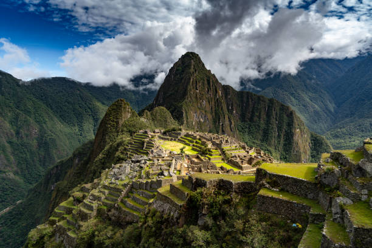
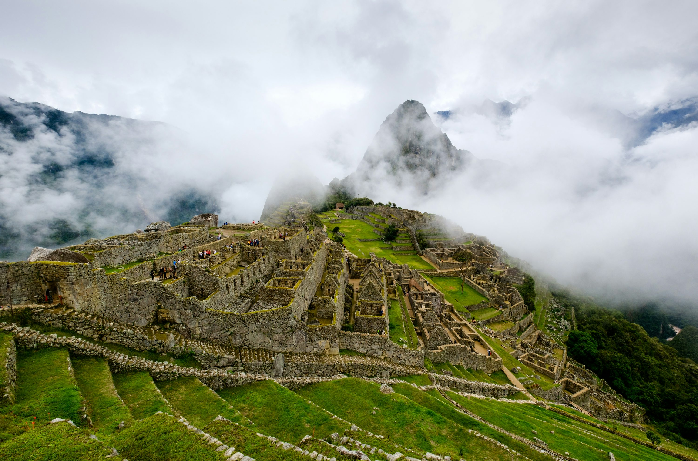
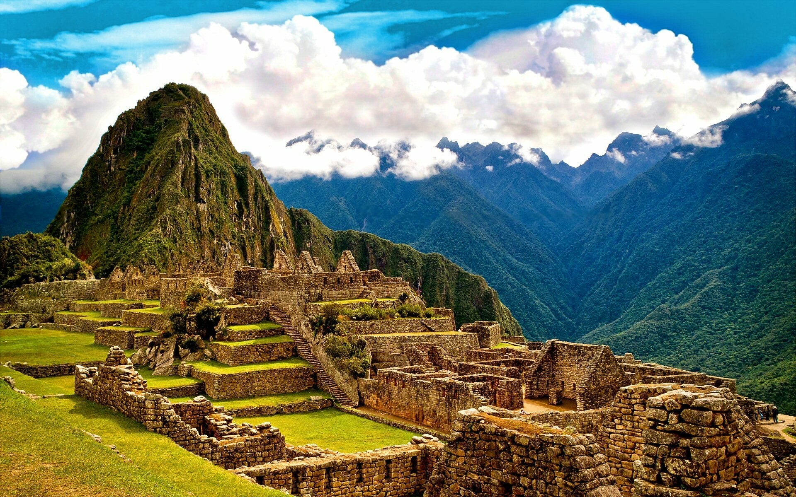
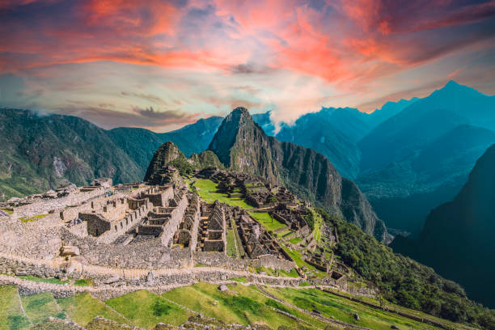
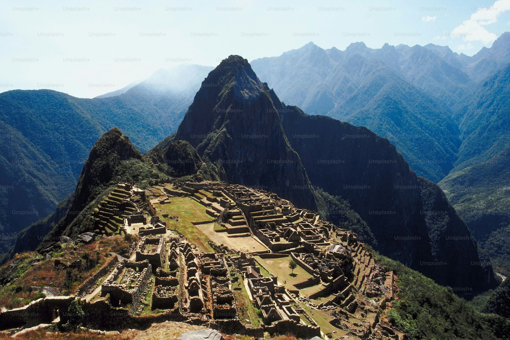
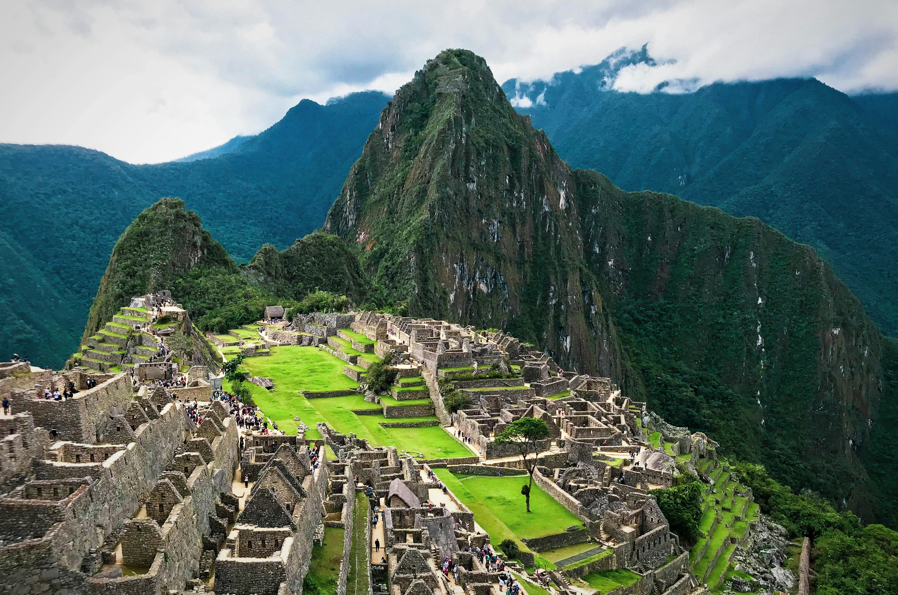
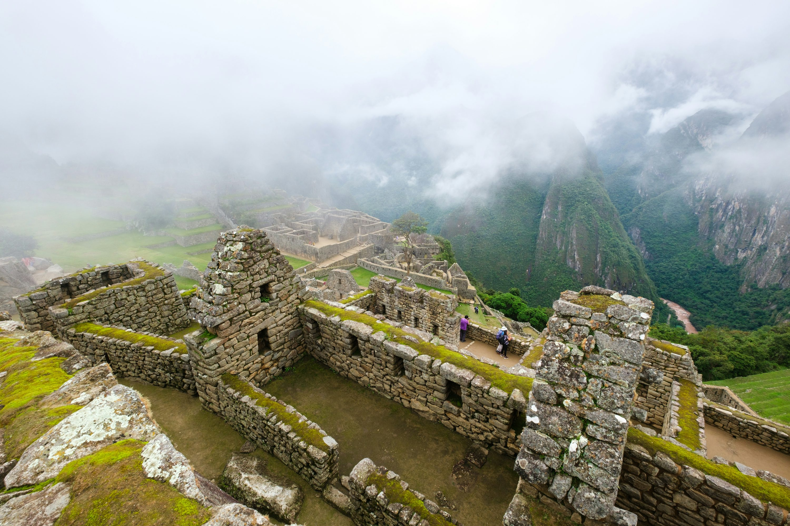
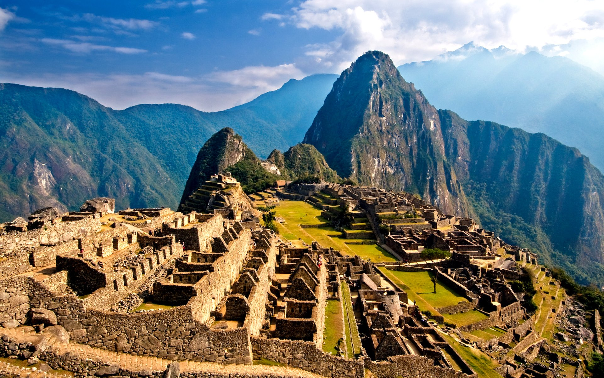
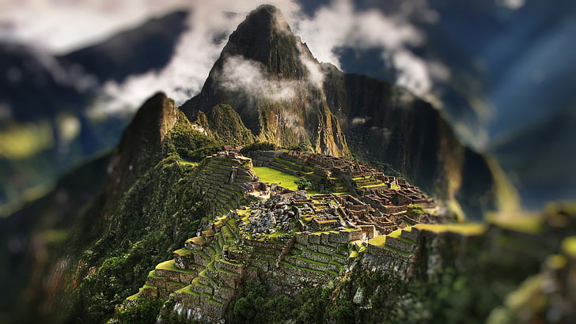
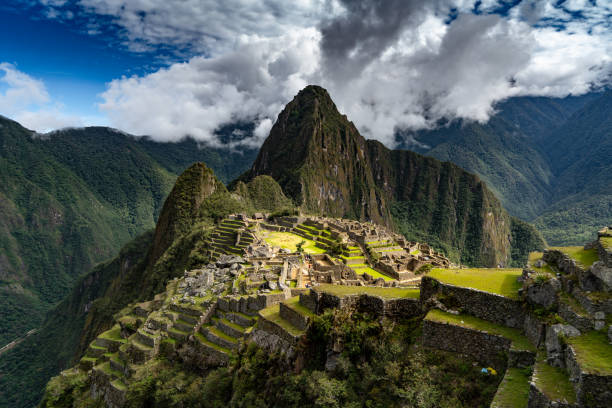
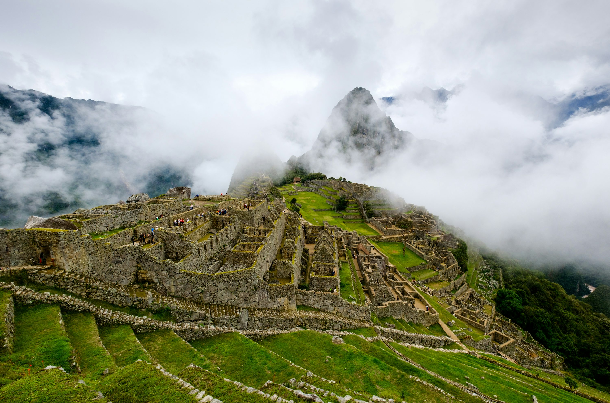
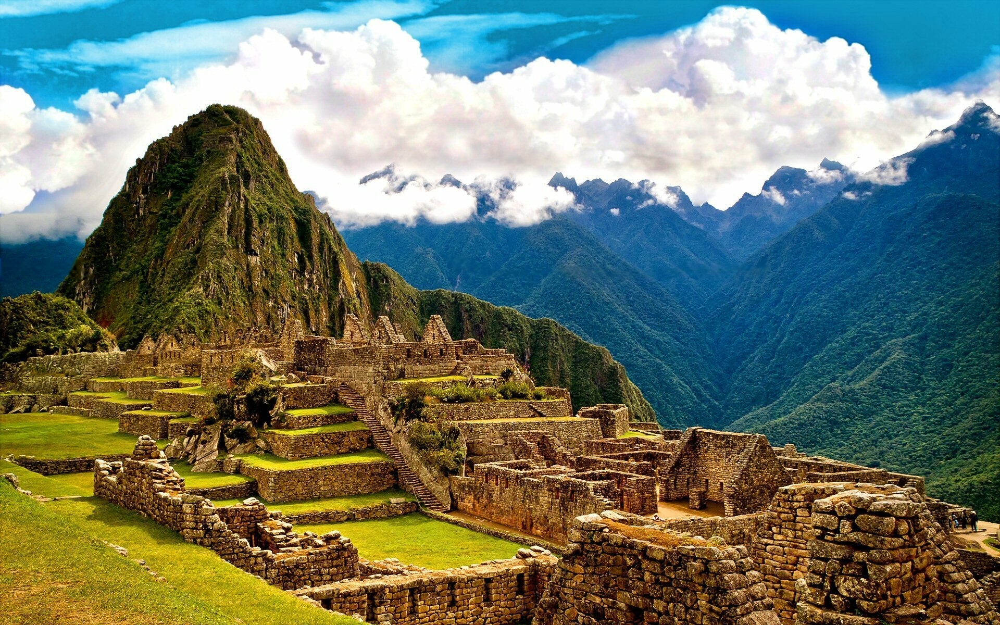
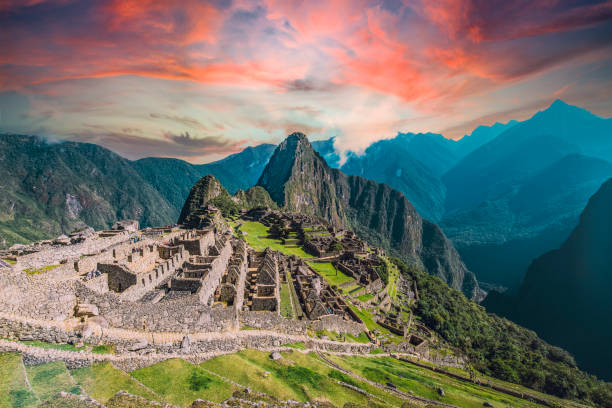
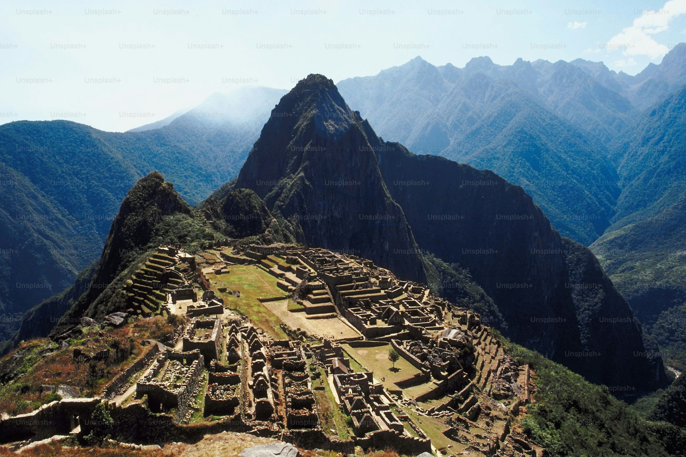
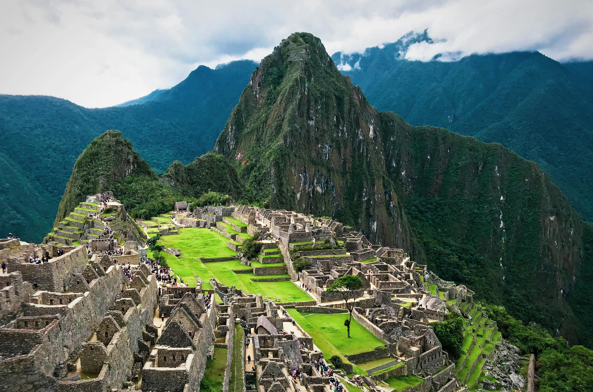
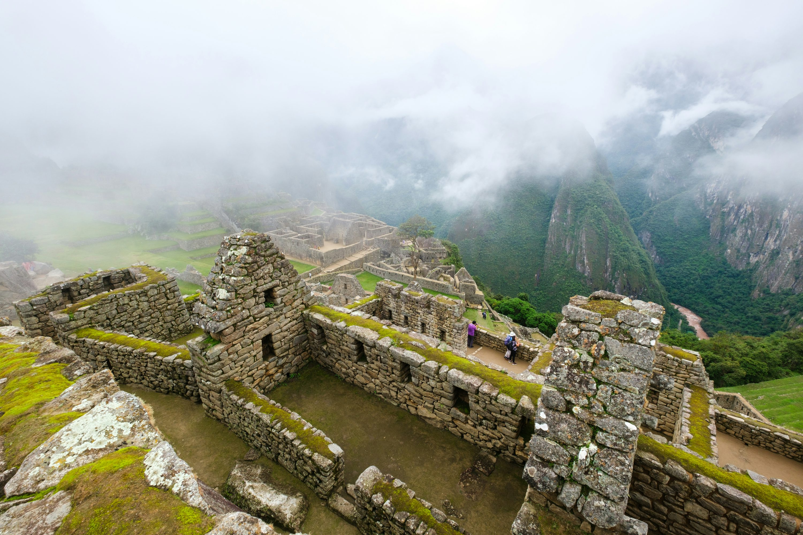
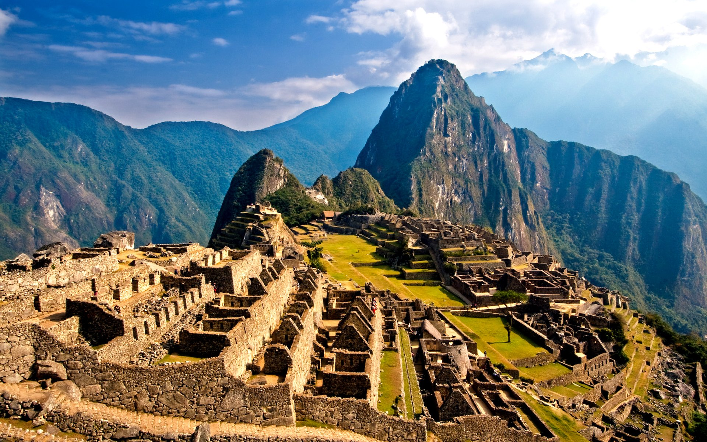
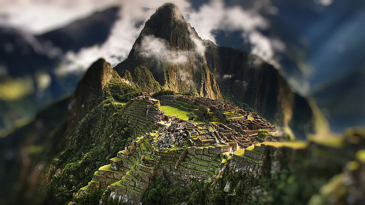
 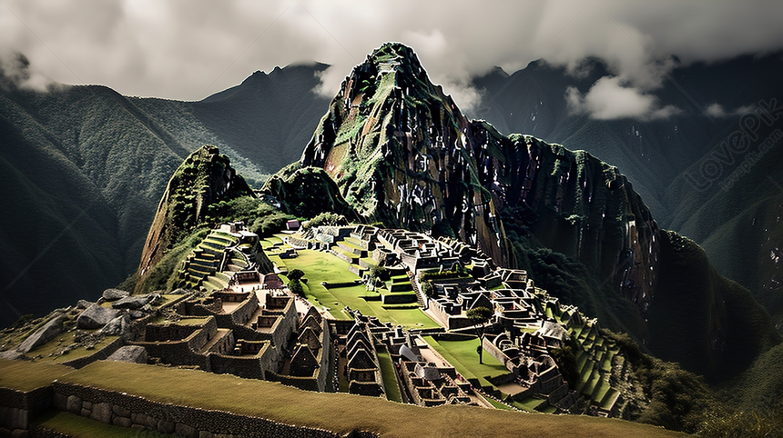
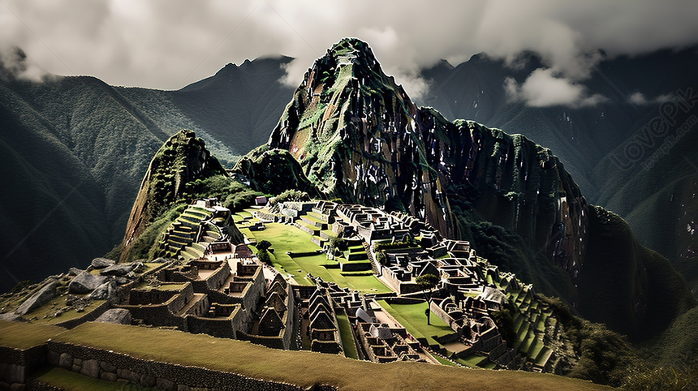